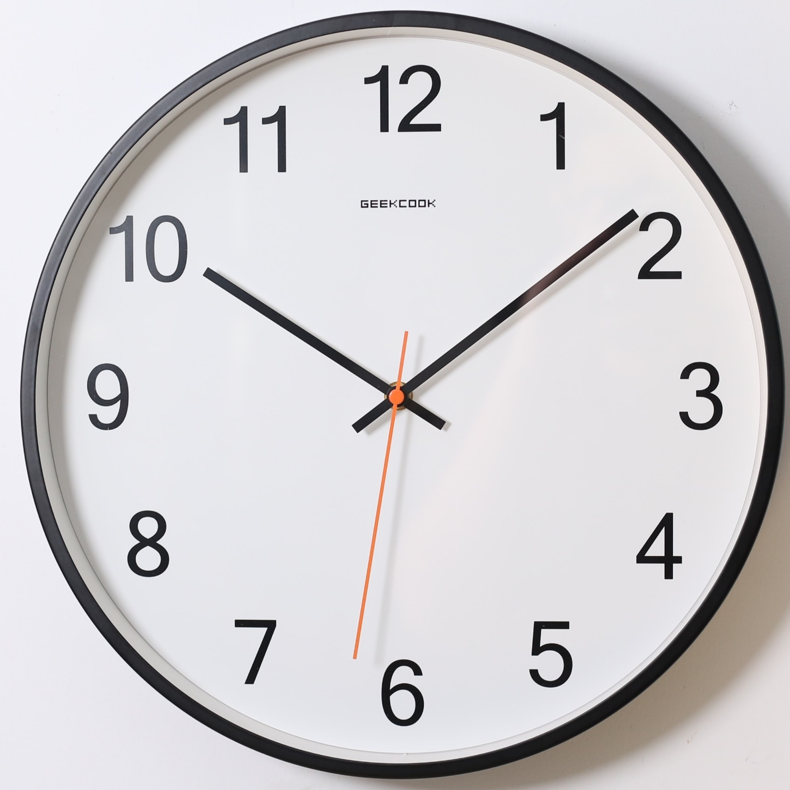
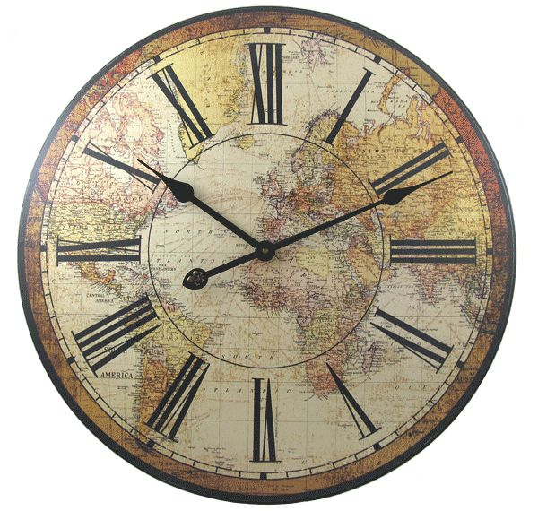
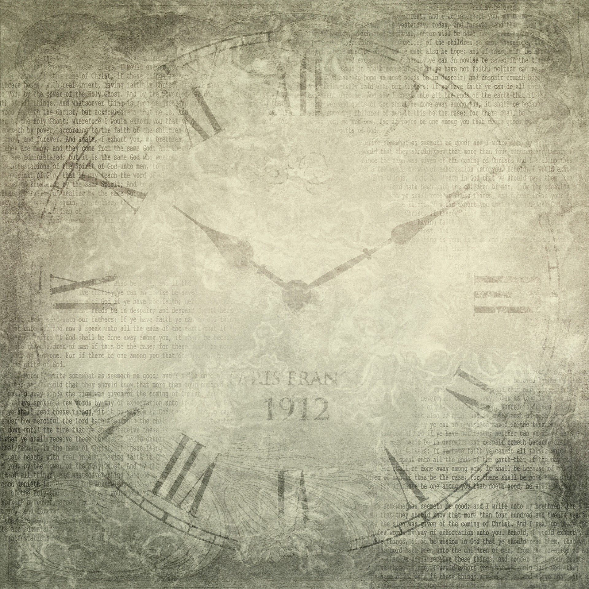

WAIT ON THE LORD
The Reasons for Waiting
Freedom from Shame
Indeed, none of those who [expectantly] wait for You will be ashamed; Those who turn away from what is right and deal treacherously without cause will be ashamed (humiliated, embarrassed). PSALMS 25:3 AM
Answers to Prayer

I waited patiently and expectantly for the Lord; And He inclined to me and heard my cry. He brought me up out of a horrible pit [of tumult and of destruction], out of the miry clay, And He set my feet upon a rock, steadying my footsteps and establishing my path. He put a new song in my mouth, a song of praise to our God; Many will see and fear [with great reverence] And will trust confidently in the Lord . PSALMS 40:1-3 AMP
Help and Protection

We wait [expectantly] for the Lord; He is our help and our shield For in Him our heart rejoices, Because we trust [lean on, rely on, and are confident] in His holy name. Let Your [steadfast] lovingkindness, O Lord , be upon us, In proportion as we have hoped in You. PSALMS 33:20-22 AMP
Counsel
But they quickly forgot His works; They did not [patiently] wait for His counsel and purpose [to be revealed regarding them], But lusted intensely in the wilderness And tempted God [with their insistent desires] in the desert. PSALMS 106:13-14 AMP
Mercy

For in Him our heart rejoices, Because we trust [lean on, rely on, and are confident] in His holy name. Let Your [steadfast] lovingkindness, O Lord , be upon us, In proportion as we have hoped in You. PSALMS 33:21-22 AMP
Blessings
Therefore the Lord waits [expectantly] and longs to be gracious to you, And therefore He waits on high to have compassion on you.For the Lord is a God of justice; Blessed (happy, fortunate) are all those who long for Him [since He will never fail them]. ISAIAH 30:18 AMP
Preservation
Let integrity and uprightness protect me, For I wait [expectantly] for You. PSALMS 25:21 AMP
Salvation
For God alone my soul waits in silence;From Him comes my salvation. He alone is my rock and my salvation, My defense and my strong tower; I will not be shaken or disheartened. PSALMS 62:1-2 AM
Hope
“And now, Lord, for what do I expectantly wait? My hope [my confident expectation] is in You. “Save me from all my transgressions; Do not make me the scorn and reproach of the [self-righteous, arrogant] fool. PSALMS 39:7-8 AMP
Patience
Be still before the Lord ;wait patiently for Him and entrust yourself to Him;Do not fret (whine, agonize) because of him who prospers in his way,Because of the man who carries out wicked schemes. Cease from anger and abandon wrath; Do not fret; it leads only to evil. For those who do evil will be cut off, But those who wait for the Lord , they will inherit the land. PSALMS 37:7-9 AMP
Goodness
The Lord is good to those who wait [confidently] for Him, To those who seek Him [on the authority of God’s word]. It is good that one waits quietly For the salvation of the Lord. LAMENTATIONS 3:25-26 AMP
Life
To rescue their lives from death And keep them alive in famine. We wait [expectantly] for the Lord; He is our help and our shield. PSALMS 33:19-20 AMP
Integrity and Uprightness

Let integrity and uprightness protect me, For I wait [expectantly] for You. PSALMS 25:21 AMP
Revelation of God
It will be said in that day, “Indeed, this is our God for whom we have waited that He would save us. This is the Lord for whom we have waited; Let us shout for joy and rejoice in His salvation.” ISAIAH 25:9 AMP
Inheritance of the Earth
Wait for and expect the Lord and keep His way, And He will exalt you to inherit the land; [In the end] when the wicked are cut off, you will see it. PSALMS 37:34 AMP
Eternal Things
For from days of old no one has heard, nor has ear perceived, Nor has the eye seen a God besides You, Who works and acts in behalf of the one who [gladly] waits for Him. ISAIAH 64:4 AMP
Justice
Indeed, in the path of Your judgments, O Lord, We have waited expectantly for You; Your name, even Your memory, is the desire and deep longing of our souls. In the night my soul longs for You [O Lord ], Indeed, my spirit within me seeks You diligently; For [only] when Your judgments are experienced on the earth Will the inhabitants of the world learn righteousness. ISAIAH 26:8-9 AMP
Strength
O love the Lord , all you His godly ones! The Lord preserves the faithful [those with moral and spiritual integrity] And fully repays the [self-righteousness of the] arrogant.Be strong and let your hearts take courage, All you who wait for and confidently expect the Lord. PSALMS 31:23-24 AMP
Renewed Strength and Courage

But those who wait for the Lord [who expect, look for, and hope in Him] Will gain new strength and renew their power; They will lift up their wings [and rise up close to God] like eagles [rising toward the sun]; They will run and not become weary, They will walk and not grow tired. ISAIAH 40:31 AMP
Holy Spirit Baptism
Then He opened their minds to [help them] understand the Scriptures, and said, “And so it is written, that the Christ (the Messiah, the Anointed) would suffer and rise from the dead on the third day, and that repentance [necessary] for forgiveness of sins would be preached in His name to all the nations, beginning from Jerusalem. You are witnesses of these things. Listen carefully: I am sending the Promise of My Father [the Holy Spirit] upon you; but you are to remain in the city [of Jerusalem] until you are clothed (fully equipped) with power from on high.” LUKE 24:45-49 AMP
Inheritance of the Earth
Wait for and expect the Lord and keep His way, And He will exalt you to inherit the land; [In the end] when the wicked are cut off, you will see it.PSALMS 37:34 AMP

7 Ways of Waiting on God
Prayerfully
Let me know Your ways, O Lord;Teach me Your paths. Guide me in Your truth and teach me, For You are the God of my salvation; For You [and only You] I wait [expectantly] all the day long.
Patiently
Be still before the Lord;wait patiently for Him and entrust yourself to Him; Do not fret (whine, agonize) because of him who prospers in his way, Because of the man who carries out wicked schemes. Cease from anger and abandon wrath; Do not fret; it leads only to evil. For those who do evil will be cut off, But those who wait for the Lord , they will inherit the land.
The Lord upholds all those [of His own] who fall And raises up all those who are bowed down. The eyes of all look to You [in hopeful expectation], And You give them their food in due time.
Single-Mindedly
For God alone my soul waits in silence and quietly submits to Him, For my hope is from Him. He only is my rock and my salvation; My fortress and my defense, I will not be shaken or discouraged. On God my salvation and my glory rest; He is my rock of [unyielding] strength, my refuge is in God. Trust [confidently] in Him at all times, O people; Pour out your heart before Him. God is a refuge for us. Selah.
Expectantly
But as for me, I will look expectantly for the Lord and with confidence in Him I will keep watch; I will wait [with confident expectation] for the God of my salvation. My God will hear me. Do not rejoice over me [amid my tragedies], O my enemy! Though I fall, I will rise; Though I sit in the darkness [of distress], the Lord is a light for me.
Unto you I lift up my eyes, O You who are enthroned in the heavens! Behold, as the eyes of servants look to the hand of their master, And as the eyes of a maid to the hand of her mistress, So our eyes look to the Lord our God, Until He is gracious and favorable toward us.
For God alone my soul waits in silence and quietly submits to Him, For my hope is from Him. He only is my rock and my salvation; My fortress and my defense, I will not be shaken or discouraged. On God my salvation and my glory rest; He is my rock of [unyielding] strength, my refuge is in God. Trust [confidently] in Him at all times, O people; Pour out your heart before Him. God is a refuge for us. Selah
Longingly
If You, Lord , should keep an account of our sins and treat us accordingly, O Lord, who could stand [before you in judgment and claim innocence]? But there is forgiveness with You, That You may be feared and worshiped [with submissive wonder]. I wait [patiently] for the Lord , my soul [expectantly] waits, And in His word do I hope. My soul waits for the Lord More than the watchmen for the morning; More than the watchmen for the morning. O Israel, hope in the Lord; For with the Lord there is lovingkindness, And with Him is abundant redemption. And He will redeem Israel From all his sins.
The way of the righteous [those in right-standing with God--living in moral and spiritual integrity] is smooth and level; O Upright One, make a level path for the just and righteous. Indeed, in the path of Your judgments, O Lord , We have waited expectantly for You; Your name, even Your memory, is the desire and deep longing of our souls. In the night my soul longs for You [O Lord ], Indeed, my spirit within me seeks You diligently; For [only] when Your judgments are experienced on the earth Will the inhabitants of the world learn righteousness. Though the wicked is shown compassion and favor, He does not learn righteousness; In the land of uprightness he deals unjustly, And refuses to see the majesty of the Lord.
Quietly
“The Lord is my portion and my inheritance,” says my soul; “Therefore I have hope in Him and wait expectantly for Him.” The Lord is good to those who wait [confidently] for Him, To those who seek Him [on the authority of God’s word]. It is good that one waits quietly For the salvation of the Lord.
Continually
Even the Lord , the God of hosts, The name of Him [who spoke with Jacob] is the Lord . Therefore, return [in repentance] to your God, Observe and highly regard kindness and justice, And wait [expectantly] for your God continually.
Gladly
For from days of old no one has heard, nor has ear perceived, Nor has the eye seen a God besides You, Who works and acts in behalf of the one who [gladly] waits for Him.
7 Examples of Waiting on God
David
Let me know Your ways, O Lord; Teach me Your paths. Guide me in Your truth and teach me, For You are the God of my salvation; For You [and only You] I wait [expectantly] all the day long.
Behold, the eye of the Lord is upon those who fear Him [and worship Him with awe-inspired reverence and obedience], On those who hope [confidently] in His compassion and lovingkindness, To rescue their lives from death And keep them alive in famine. We wait [expectantly] for the Lord ; He is our help and our shield. For in Him our heart rejoices, Because we trust [lean on, rely on, and are confident] in His holy name. Let Your [steadfast] lovingkindness, O Lord , be upon us, In proportion as we have hoped in You.
Isaiah
And I will wait for the Lord who is hiding His face from the house of Jacob; and I will look eagerly for Him.
Jeremiah
Are there any among the idols of the nations who can send rain? Or can the heavens [of their own will] give showers? Is it not You, O Lord our God? Therefore we will wait and hope [confidently] in You, For You are the one who has made all these things [the heavens and the rain].
Micah
But as for me, I will look expectantly for the Lord and with confidence in Him I will keep watch; I will wait [with confident expectation] for the God of my salvation. My God will hear me.
Simeon
And, behold, there was a man in Jerusalem, whose name was Simeon; and the same man was just and devout, waiting for the consolation of Israel: and the Holy Ghost was upon him. And it was revealed unto him by the Holy Ghost, that he should not see death, before he had seen the Lord's Christ.
All Creation
There is the sea, great and broad, In which are swarms without number, Creatures both small and great. There the ships [of the sea] sail, And Leviathan [the sea monster], which You have formed to play there. They all wait for You To give them their food in its appointed season. You give it to them, they gather it up; You open Your hand, they are filled and satisfied with good [things].
The eyes of all look to You [in hopeful expectation], And You give them their food in due time. You open Your hand And satisfy the desire of every living thing.

Blessings Come By Waiting
Let me know Your ways, O Lord ; Teach me Your paths. Guide me in Your truth and teach me, For You are the God of my salvation; For You [and only You] I wait [expectantly] all the day long.
Guard my soul and rescue me; Do not let me be ashamed or disappointed, For I have taken refuge in You. Let integrity and uprightness protect me, For I wait [expectantly] for You.
I would have despaired had I not believed that I would see the goodness of the Lord In the land of the living. Wait for and confidently expect the Lord; Be strong and let your heart take courage; Yes, wait for and confidently expect the Lord.
For from days of old no one has heard, nor has ear perceived, Nor has the eye seen a God besides You, Who works and acts in behalf of the one who [gladly] waits for Him.
The Lord is good to those who wait [confidently] for Him, To those who seek Him [on the authority of God’s word]. It is good that one waits quietly For the salvation of the Lord .
Listen carefully: I am sending the Promise of My Father [the Holy Spirit] upon you; but you are to remain in the city [of Jerusalem] until you are clothed (fully equipped) with power from on high.”
The way of the righteous [those in right-standing with God--living in moral and spiritual integrity] is smooth and level; O Upright One, make a level path for the just and righteous. Indeed, in the path of Your judgments, O Lord, We have waited expectantly for You; Your name, even Your memory, is the desire and deep longing of our souls. In the night my soul longs for You [O Lord ], Indeed, my spirit within me seeks You diligently; For [only] when Your judgments are experienced on the earth Will the inhabitants of the world learn righteousness.
Therefore the Lord waits [expectantly] and longs to be gracious to you, And therefore He waits on high to have compassion on you. For the Lord is a God of justice; Blessed (happy, fortunate) are all those who long for Him [since He will never fail them]. O people in Zion, inhabitant in Jerusalem, you will weep no longer. He will most certainly be gracious to you at the sound of your cry for help; when He hears it, He will answer you. Though the Lord gives you the bread of adversity and the water of oppression, yet your Teacher will no longer hide Himself, but your eyes will [constantly] see your Teacher. Your ears will hear a word behind you, “This is the way, walk in it,” whenever you turn to the right or to the left.
While being together and eating with them, He commanded them not to leave Jerusalem, but to wait for what the Father had promised, “Of which,” He said, “you have heard Me speak. For John baptized with water, but you will be baptized and empowered and united with the Holy Spirit, not long from now.” So when they had come together, they asked Him repeatedly, “Lord, are You at this time reestablishing the kingdom and restoring it to Israel?” He said to them, “It is not for you to know the times or epochs which the Father has fixed by His own authority. But you will receive power and ability when the Holy Spirit comes upon you; and you will be My witnesses [to tell people about Me] both in Jerusalem and in all Judea, and Samaria, and even to the ends of the earth.”
O love the Lord , all you His godly ones! The Lord preserves the faithful [those with moral and spiritual integrity] And fully repays the [self-righteousness of the] arrogant. Be strong and let your hearts take courage, All you who wait for and confidently expect the Lord.
The Lord will not leave him in his hand Or let him be condemned when he is judged. Wait for and expect the Lord and keep His way, And He will exalt you to inherit the land; [In the end] when the wicked are cut off, you will see it.
O Lord , how many and varied are Your works! In wisdom You have made them all; The earth is full of Your riches and Your creatures... They all wait for You To give them their food in its appointed season. You give it to them, they gather it up; You open Your hand, they are filled and satisfied with good [things].
Do you not know? Have you not heard? The Everlasting God, the Lord, the Creator of the ends of the earth Does not become tired or grow weary; There is no searching of His understanding. He gives strength to the weary, And to him who has no might He increases power. Even youths grow weary and tired, And vigorous young men stumble badly, But those who wait for the Lord [who expect, look for, and hope in Him] Will gain new strength and renew their power; They will lift up their wings [and rise up close to God] like eagles [rising toward the sun]; They will run and not become weary, They will walk and not grow tired.
The Lord upholds all those [of His own] who fall And raises up all those who are bowed down. The eyes of all look to You [in hopeful expectation], And You give them their food in due time. You open Your hand And satisfy the desire of every living thing. The Lord is [unwaveringly] righteous in all His ways And gracious and kind in all His works. The Lord is near to all who call on Him, To all who call on Him in truth (without guile). He will fulfill the desire of those who fear and worship Him [with awe-inspired reverence and obedience]; He also will hear their cry and will save them. The Lord keeps all who love Him, But all the wicked He will destroy.
I waited patiently and expectantly for the Lord ; And He inclined to me and heard my cry. He brought me up out of a horrible pit [of tumult and of destruction], out of the miry clay, And He set my feet upon a rock, steadying my footsteps and establishing my path. He put a new song in my mouth, a song of praise to our God; Many will see and fear [with great reverence] And will trust confidently in the Lord . Blessed [fortunate, prosperous, and favored by God] is the man who makes the Lord his trust, And does not regard the proud nor those who lapse into lies.
Then Israel believed in [the validity of] His words; They sang His praise. But they quickly forgot His works; They did not [patiently] wait for His counsel and purpose [to be revealed regarding them], But lusted intensely in the wilderness And tempted God [with their insistent desires] in the desert. So He gave them their request, But sent a wasting disease among them.
“Kings will be your attendants, And their princesses your nurses. They will bow down to you with their faces to the earth And lick the dust of your feet; And you shall know [with an understanding based on personal experience] that I am the Lord; For they shall not be put to shame who wait and hope expectantly for Me.
Do not trust in oppression, And do not vainly hope in robbery; If riches increase, do not set your heart on them. God has spoken once, Twice I have heard this: That power belongs to God. Also to You, O Lord, belong lovingkindness and compassion, For You compensate every man according to [the value of] his work.
Behold, the eye of the Lord is upon those who fear Him [and worship Him with awe-inspired reverence and obedience], On those who hope [confidently] in His compassion and lovingkindness, To rescue their lives from death And keep them alive in famine. We wait [expectantly] for the Lord; He is our help and our shield. For in Him our heart rejoices, Because we trust [lean on, rely on, and are confident] in His holy name. Let Your [steadfast] lovingkindness, O Lord , be upon us, In proportion as we have hoped in You.
Be still before the Lord ; wait patiently for Him and entrust yourself to Him; Do not fret (whine, agonize) because of him who prospers in his way, Because of the man who carries out wicked schemes. Cease from anger and abandon wrath; Do not fret; it leads only to evil. For those who do evil will be cut off, But those who wait for the Lord , they will inherit the land.
But there is forgiveness with You, That You may be feared and worshiped [with submissive wonder]. I wait [patiently] for the Lord , my soul [expectantly] waits, And in His word do I hope. My soul waits for the Lord More than the watchmen for the morning; More than the watchmen for the morning. O Israel, hope in the Lord ; For with the Lord there is lovingkindness, And with Him is abundant redemption. And He will redeem Israel From all his sins.
“I wait for Your salvation, O Lord.

Credits